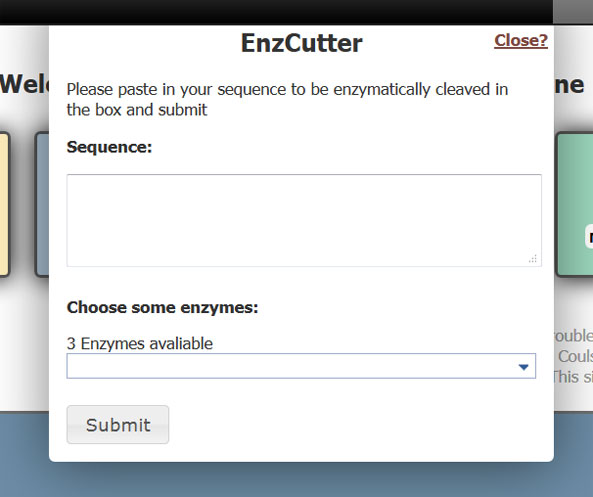

Help
Contents:Main
Above: Front page.
Choose from:
- Browse, to browse by protein product name
- Search, to search the database via 4 different methods
- EnzCutter, to enzymaticaly cleave a protein
- Help, to get here
At any time, press the "Home" button to reset the page and start again, also pressing the "EnzCutter" button will bring up the EnzCutter over any page
12Chrom is built on; Javascript using the jQuery library, HTML5 and CSS3. All modern browsers support this site (Firefox 18+, Chrome, IE8+).
If for any reason you cannot use the site as it is, please use the fallback version.
Search Results
Above: Search Results for q13
The search results returned will show the Accession number, the protein name, a diagram of the layout of the gene, location and length.
The legend for layout is as follows:
- Dark blue: Non Coding sequences (NCS)
- Light blue: Exons
- Red: Introns
Use the title headings to sort by ascending or descending order.
Single Page
Above: Single page for AB055802
The single page will detail everything to do with the gene.
Gene layout
The gene layout diagram has the same legend as the search page.
Codon Usage
A heatmap showing codon usage, the more red the triplet, the more used in the gene it is. Click to download the image.
Also avaliable is a pie chart showing the data as percentages
Common Restriction sites
The page will automatically cut with the 3 most popular enzymatic cleavage sites and display the results. To cut your own, please click the EnzCutter link on the page or at the top.
To interpret these results please see EnzCutter
EnzCutter
Above: EnzCutter Results
Results
The above image shows the results for an EnzCutter cut.
The titles describe the enzyme used while the subheading describes the cut number.
The sequence along with the cut is shown, along with the overhang and the location of the cut.
Cut
Above: EnzCutter submission form
EnzCutter will accept any sequence entered and perform a cut on it, including FASTA sequences.
Enter the sequences (if you are on a Single page, it will be entered automatically) and choose enzymes from the dropdown list or by typing a couple of letters from the sequence name.
If you don't see an enzyme in the list, then enter the sequence in the following format: A|TTTT and press return. Please note currently EnzCutter does not support any other nucleotide but ATGC.
API
This site has an avaiable JSON API that is very easily called.
All requests must be directed toward:
cgi-bin/json.pl
Search for a Gene
To search the database 3 GET flags must be set:
- "selector": "search"
- "searchType": One of:
- GeneID
- ProteinProduct
- AccessionNumber
- ChromosomeLocation
- "query": Your query
The order of these values do not matter, however, the flags and the search types are context sensitive.
For example, a GeneID search for a gene with the Accession number of "1914776"
cgi-bin/json.pl?selector=search&searchType=GeneID&query=2780780Try it!
The above would return:
(Please mouse over the links for an explanation of each element.)
{
"AB002805" : {
"GeneName" : "2780780",
"GeneLength" : "1249",
"ChromosomeLocation" : "12q13",
"ProteinId" : "BAA24362.1",
"SeqFeat" : [
"NCS;0:1051",
"EXON;1052:1213",
"NCS;1214:1249"
],
"ProteinName" : ""
}
}
Browse by letter
To browse for Protein product names:
- "selector": "browse"
- "query": Your query, a letter A-Z (case insensitive)
For example:
cgi-bin/json.pl?selector=single&query=aTry it!
Will return the same as "search" above.
Single Gene
To show a single gene record
- "selector": "single"
- "query": Your query, assumes an Accession Number (case sensitive).
For example:
cgi-bin/json.pl?selector=single&query=AB002805Try it!
Will return:
(Please mouse over the links for an explanation of each element, "(...)" denotes truncated sequences)
{
"AB002805" : {
"GeneName" : "2780780",
"FeatureSequences" : [
"NCS| (...)",
"INTRON|(...)",
"EXON|(...)"
],
"DNASeq" : "GGAATT(...)",
"ProteinId" : "BAA24362.1",
"SeqFeat" : [
"NCS;0:1051",
"EXON;1052:1213",
"NCS;1214:1249"
],
"DNASeqFASTA" : [
">gi|2780780|gb|BAA24362.1|",
(...)
],
"CodonUsage" : {
"Leu" : {
"CUA" : [
"0.00",
"0.83"
],
},
"AASeq" : "MAAETLLSSLLGLLLLGLLLPASLTGGVGSLNLEELSEMRYGIEILPLPVMGGQ",
"AASeqFASTA" : [
">gi|2780780|gb|BAA24362.1|",
"MAAETLLSSLLGLLLLGLLLPASLTGGVGSLNLEELSEMRYGIEILPLPVMGGQ"
],
"ChromosomeLocation" : "12q13",
"GeneLength" : "1249",
"ProteinName" : ""
}
}
Restriction Enzymes
To list all the avaliable restriciton enzymes in the database:
- "selector": "res"
- "mode": "GetRES"
For example:
cgi-bin/json.pl?selector=res&mode=GetRESTry it!
Would return:
{
"BamHI" : "G|GATCC",
"EcoRI" : "G|AATTC",
"BsuMI" : "C|TCGAG"
}
EnzCutter
To cut a sequence or specific gene with a restriction enzyme, use EnzCutter.
EnzCutter CalcRES is a POST service.
- "selector": "res"
- "mode": "CalcRES"
- "query": Nucleic acid sequnce or Accession Number
- "gene":
- An avaliable RES from "GetRES" as a comma separated list eg "EcoRI,BamHI"
- Sequence formatted as such: A|TTTT, can be multiple separated with commas
cgi-bin/json.pl?selector=res&mode=CalcRES&query=AB002805&gene=EcoRITry it
Will return:
{
"result" : {
"EcoRI" : {
"cut0" : {
"sequence-reverse" : "C,CTTAA|G,TAAGA",
"cut" : "G|AATTC",
"location" : "2,11",
"sequence-forward" : "G,G|AATTC,ATTCT"
}
}
}
}